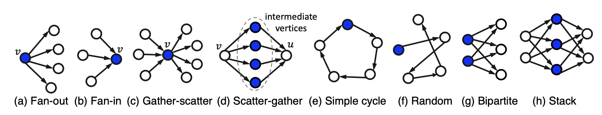
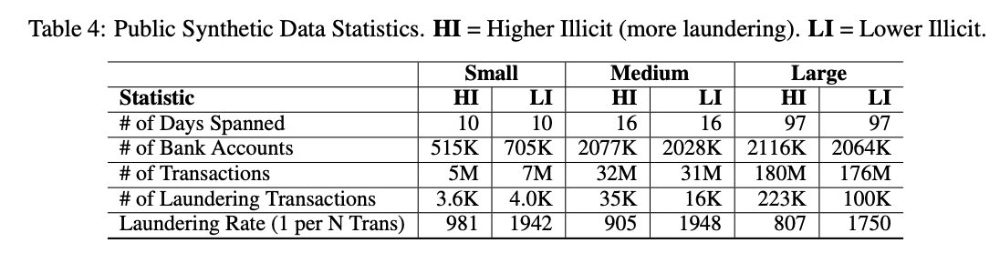
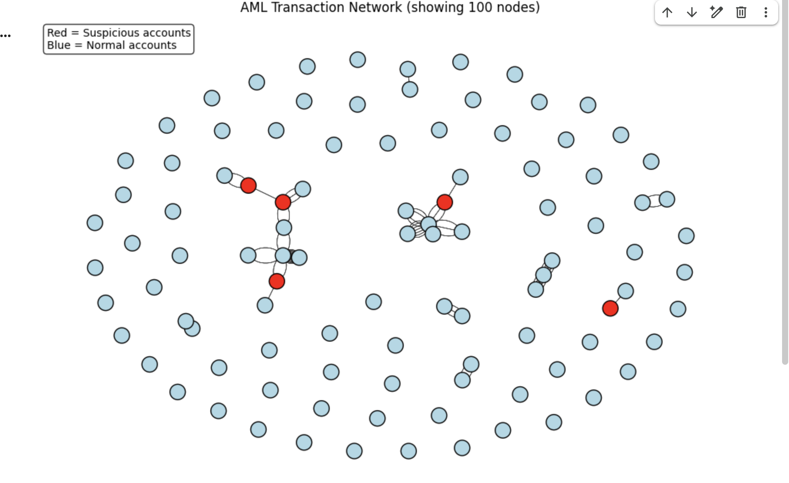
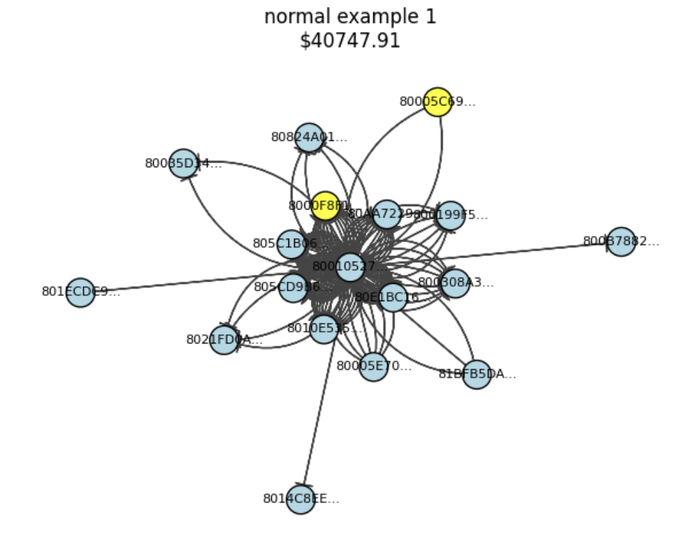
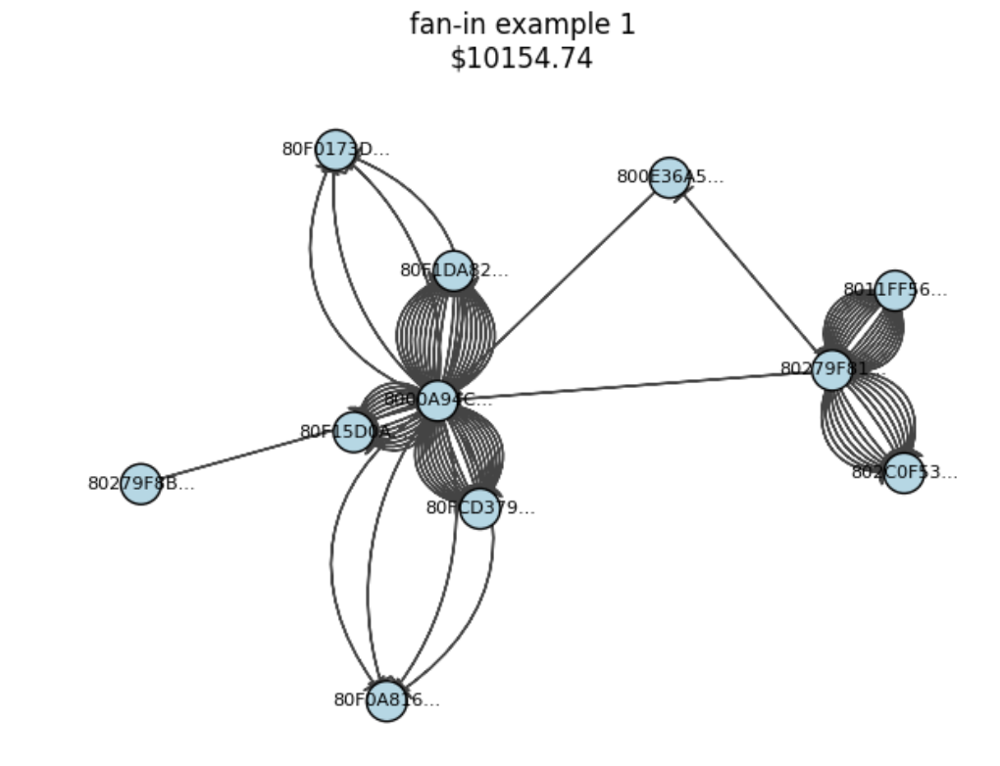
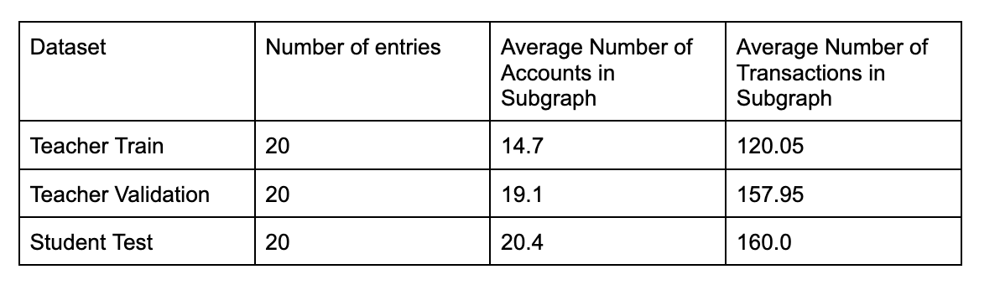

| LLMs for Transaction Graph Pattern Detection | |||
| Olivia Han | Eghosa Ohenhen | Jaclyn Thi | |
| Final project for 6.7960, MIT | |||
Introduction
Motivation
Designing systems to detect anomalies in complex relational data while remaining interpretable is a key challenge in AI. A particularly important domain for this is financial transaction monitoring, where missed anomalies can facilitate fraud and false alarms can disrupt normal activity. Detecting such behavior is inherently a graph problem, as illicit funds follow structured patterns across accounts and intermediaries. Graph-based methods like GNNs achieve strong predictive performance but are typically opaque, offering little human-interpretable insight into why a transaction was flagged, and require extensive labeled data and infrastructure to train and deploy. As such, Large Language Models (LLMs) provide a potential alternative way to reason over graph-structured financial data.
Background and Related Work
Traditional graph-based approaches, including Graph Neural Networks (GNNs), learn latent representations to flag suspicious patterns and have demonstrated strong performance across various fraud detection tasks. Yet, these models are typically opaque, offering limited interpretability and little insight into why a transaction was flagged. This limitation has motivated a shift toward using Large Language Models (LLMs) as reasoning engines over graph-structured financial data. Synthetic AML benchmarks, such as the IBM anti–money laundering dataset, simulate canonical laundering typologies—including fan-in, fan-out, gather-scatter, scatter-gather, simple cycle, random, bipartite, and stack—which provide labeled transaction graphs in a domain where real, sensitive data are scarce [1]. These typologies also form the pattern vocabulary used in recent LLM-based AML experiments.
LLMs offer a promising alternative for reasoning over transaction graphs. Pirmorad demonstrates that serializing local k-hop neighborhoods around candidate transactions into text allows a general-purpose LLM to emulate an investigator’s reasoning: assessing suspiciousness and producing natural-language justifications [2]. This approach enables LLMs to act as interpretable “reasoning heads,” combining structural graph signals with rich prior knowledge. However, applying LLMs naively to every candidate transaction is computationally expensive, and their tendency to hallucinate—producing plausible but unsupported explanations—poses a major risk in high-stakes domains like AML. Moreover, large graphs often exceed context limits, forcing LLM reasoning to focus on local subgraphs and potentially missing broader, global patterns.
To address these challenges, recent work has explored multi-agent LLM reasoning frameworks. Hu et al. (2024) [3] introduce a system in which multiple specialized LLM agents jointly reason over subgraph-centric tasks, aggregating their partial results to produce a final decision. This distributed approach reduces the computational burden on any single model and improves robustness through ensemble-like consensus, though it introduces additional orchestration complexity.
Complementary to this, the teacher–student paradigm offers a way to
combine the strengths of large, expressive LLMs with the efficiency of
smaller models. Knowledge distillation allows a
compact student model to learn both the outputs and intermediate
reasoning traces of a teacher [4]. Hsieh et al. demonstrate that
chain-of-thought reasoning from very large models can be distilled
into smaller LLMs with minimal loss in performance, effectively
transferring both answers and explanation styles [5].
Our work sits at the intersection of these trends. We adopt LLM-based graph reasoning for AML, specialize multiple teacher agents as pattern experts in a multi-agent framework and distill their judgments into a single, compact student model using supervised distillation techniques inspired by Hinton et al. and Hsieh et al.. This design aims to balance interpretability, accuracy, and computational efficiency in high-stakes AML reasoning.
Goals
In this project, we investigate whether a smaller student LLM can learn pattern-aware AML reasoning by distilling knowledge from larger, pattern-specialized teacher LLMs. We focus on two accepted laundering typologies—fan-in and fan-out—using a transactional graph derived from a realistic AML benchmark, aiming to show that this approach can extend to other patterns. For each typology, a teacher LLM acts as a specialist, producing structured judgments (suspicious/not suspicious, pattern label, and explanation) for k-hop subgraphs around candidate transactions. We then fine-tune a compact student model to imitate these teachers via supervised distillation. Our key questions are: (1) Can a small student approximate the pattern-level judgments of larger teachers? and (2) How do factors like teacher data volume, neighborhood radius k, number of teachers, and inclusion of teacher rationales affect student performance and interpretability? This study explores the feasibility of scalable, explainable AML detectors distilled from expert LLMs.
Methodology
Data Sourcing
We study transaction-level anomaly detection on a financial graph, where vertices correspond primarily to accounts and edges correspond to money transfers between accounts. Each edge carries attributes such as timestamp, amount, currency, and payment format, and is labeled as either laundering-related or normal activity. Following Pirmorad (2025), we used an open source dataset generated from AMLworld[1], a synthetic financial transaction dataset generator based on the IBM AML Synthetic Dataset developed by Altman (2023) for more realistic transactions [2] . The dataset we used is part of a collection of 6 datasets available on Kaggle. The collection has the 6 datasets split into 2 groups, HI and LI, where HI datasets have a higher illicit transaction ratio compared to the LI datasets (lower illicit). Each group has a small, medium and large dataset which range from 5M to 180M transactions. More information about the dataset collection can be seen in the figure below.
Data Selection
While Pirmorad (2025) employed the HI-Small variant, we selected LI-Small to balance realism with computational constraints, as the lower illicit ratio (while still substantial) better reflects real-world AML scenarios where suspicious transactions constitute a minority of total activity.
Sampling Strategy
Rather than random sampling from the full dataset, we adopted a pattern-centric approach focused on two specific laundering typologies: fan-in and stack patterns. This decision was motivated by Pirmorad's (2025) findings that pattern complexity significantly affects LLM detection performance. He found that fan-in patterns demonstrated high predictability (precision 73.8%, recall 81.5%), while stack patterns proved more challenging (precision 52.0%, recall 58.0%). By concentrating on these contrasting cases, we aimed to construct a dataset that would expose both the strengths and limitations of the teacher-student distillation framework.
To ensure meaningful representation of non-laundering activity, we implemented a fraud-adjacent filtering strategy: we retained only transactions where at least one participating account had been involved in a stack or fan-in transaction elsewhere in the graph. This approach yielded structurally relevant negative examples, where the accounts and relationships between normal and laundering patterns were similar. We hoped that with this approach, the model could not just associate an account with laundering activity (overfitting to the wrong characteristic) but instead have to focus on the coordinated, multi-hop characteristics that distinguish actual suspicious activity. This filtering reduced our graph from the full LI-Small dataset with 705K transactions to a more computationally tractable subgraph of 1,791 unique accounts.
Graph Construction
We constructed the transaction graph using the igraph library rather than implementing custom breadth-first search traversal. This design choice was driven by computational efficiency: igraph's optimized C-based backend enables direct k-hop neighborhood extraction via .neighborhood(k) calls, avoiding the need to maintain explicit neighbor lists or repeatedly iterate through edge dataframes—operations that scale poorly with graph density, which was key as inital tests revealed the high out-degree characteristic of the L1-small dataset, an inital test with no filtering had 614 transactions in a k = 2 neighborhood. Our filtered graph contained 1,791 vertices (accounts) connected by thousands of directed edges (transactions), with each edge annotated with transaction metadata (timestamp, amount, currency, payment format) and labels (Is Laundering, Pattern).
Graph Visualizations
Here is a visualization of a 100 node subgraph sampled from the full graph. Nodes are colored based on their involvement in laundering patterns (red for supicious accounts, blue for normal). Edges represent transactions between accounts.
Here are example patterns extracted from the graph.
 
Dataset Partitioning
To prevent information leakage, we ensured strict separation: no transaction or account appearing in teacher training data was included in validation or test sets. Pattern distribution was stratified across splits to maintain balanced representation.
Teacher Model Construction
To generate high-quality supervisory signals for student fine-tuning, we instantiated pattern-specialized teacher LLMs using gpt-4o, following the same base model choice as Pirmorad et al. We initially envisioned constructing eight teacher models, each dedicated to identifying one of the eight common money-laundering typologies. Due to time constraints, we focused on two representative patterns—fan-in and stack—and trained a separate teacher for each. Each teacher’s objective was to reliably distinguish serialized subgraphs corresponding to its specialized pattern from benign (non-laundering) subgraphs.
Each teacher model operated within a few-shot prompting framework. Prompts began with a definition of the task, a description of possible node and edge types, and a curated block of serialized subgraphs. For the few-shot examples, we constructed balanced sets of positive (pattern-specific) and negative (non-laundering) subgraphs using the pattern annotations provided in the dataset by Altman et al [1]. These exemplars were paired with concise explanations of the relevant typology to help the teacher specialize.
After the few-shot block, each prompt concluded with a test subgraph serialization and instructions directing the model to (i) classify the subgraph as Suspicious or Not Suspicious, (ii) provide a brief rationale, and (iii) state explicitly whether the teacher’s specialized pattern was present. Teacher outputs were constrained to a structured JSON format:
{
"conclusion": "Suspicious" | "Not Suspicious",
"observed_pattern": "<pattern-name or none>",
"rationale": "<2–3 sentence explanation>"
}
To evaluate the teachers, we curated a separate test set consisting of fan-in, stack, and normal subgraphs that were not used in the few-shot block. Each teacher was evaluated only on subgraphs containing its own pattern or normal subgraphs, intentionally avoiding cross-typology classification. This design choice ensured that teachers produced highly precise positive examples for downstream student training, rather than being weakened by harder negative cases unrelated to their specialization. The test serializations used to evaluate the teachers and the teacher judgments were then used as examples to fine-tune the student model.
Student Model Distillation
To compress the behavior of our pattern-specialized teachers into a more deployable model, we train a compact student LLM via supervised knowledge distillation. The student’s goal is to mimic the teachers’ structured outputs on serialized transaction subgraphs, so that at inference time we can rely on a single lightweight model instead of repeatedly querying large external LLMs. We use a Tinker-managed fine-tuning workflow, which allows us to fine-tune gated Llama models without downloading them locally. In all experiments the student is an autoregressive decoder-only model, instantiated as either a 1B-parameter or 3B-parameter Llama-3.2 variant. Unless otherwise noted, we use a batch size of 16, learning rate of 1e-4, and a single epoch; Tinker logs training and validation negative log-likelihood (NLL) as our primary optimization signal.
The distillation dataset is derived from the teacher-labeled k=2 neighborhoods described above. Each example consists of a transaction subgraph centered on a candidate transaction, serialized into text with node types, edge directions, and basic transaction metadata. For each subgraph, the supervising teacher (fan-in or stack specialist) produces a structured JSON judgment containing a binary suspiciousness label, a pattern label, and a short rationale. We convert each labeled example into a supervised fine-tuning conversation with three messages: a system prompt describing the AML classification task and required output format, a user message containing the serialized k-hop neighborhood and instructions, and an assistant message containing the teacher’s JSON response. This format encourages the student to learn both the categorical decisions (suspicious vs. not suspicious, pattern label) and the teacher’s explanation style. The resulting dataset is randomly split into train, validation, and test subsets, with teacher outputs treated as ground truth for the student.
We evaluate the student along two complementary axes. First, we track validation mean NLL over teacher outputs as a loss-based measure of how well the student models the teacher distribution: lower NLL indicates that the student assigns higher probability to the teacher’s token sequences. Second, on the held-out test set we parse the student’s generated JSON and compare the predicted pattern label against the teacher’s label. For each typology (fan-in, stack), we compute precision and recall along with approximate 95% confidence intervals obtained via bootstrapped resampling. These pattern-level metrics provide a more interpretable view of how well the student replicates the teachers’ pattern decisions, beyond raw loss.
We run two main experiments on the student model. Experiment 1 (student model size) trains two students on the same full teacher dataset: a 1B and a 3B Llama-3.2 model, with all other hyperparameters held fixed. We compare their performance using validation mean NLL and pattern-level metrics. Experiment 2 (teacher dataset size) holds the student architecture fixed (1B model) and varies the fraction of teacher-labeled data used during training: 10%, 25%, 50%, and 100% of available examples. For each fraction we train a separate student from scratch and evaluate validation mean NLL. In both experiments, pattern precision and recall are computed on a shared held-out test set that is not used for training in any configuration.
Discussion
Teacher Evaluation Results


The fan-in teacher achieves moderate precision (0.50) but high recall (0.83), indicating it correctly flags most true fan-in cases at the cost of a fair number of false positives (CI ±0.2634). In contrast, the stack teacher has somewhat higher precision (0.625) but substantially lower recall (0.31), suggesting it is more conservative and misses many true stack patterns despite a similar level of statistical uncertainty (CI ±0.2787).
Student Evaluation Results
Overall, the student model learns to approximate the teachers’ structured judgments with reasonable fidelity despite being substantially smaller and cheaper to run. In qualitative inspection, the student’s rationales closely follow the teachers’ narrative style, referencing similar entities and transaction motifs (for example, clusters of inflows or long outgoing chains), which suggests that the model has internalized more than just the final labels. Pattern-level metrics summarize this behavior more concretely: on the held-out test set, the student achieves moderate precision for fan-in but higher precision for stack, while recall is higher for fan-in and moderately high for stack. Error bars are wide due to limited sample size, but the trends are consistent with the teacher results, indicating that the student has learned the teachers’ relative operating points rather than collapsing to a trivial baseline.
Experiment 1: Effect of Student Model Size

Experiment 1 shows a clear benefit from increased capacity. The 3B student achieves a lower validation mean NLL (roughly 1.98) than the 1B student (roughly 2.25) when both are trained on the full teacher dataset. This implies that the larger model is better at modeling the distribution of teacher outputs and is less surprised by the teachers’ token sequences. Because the outputs combine discrete labels with free-form rationales, capturing this mixture requires sufficient capacity to represent both the pattern boundaries and the stylistic variability of explanations. The 3B student appears better able to track these nuances, suggesting that modest increases in model size can yield meaningful gains in reasoning fidelity without resorting to very large models.
Experiment 2: Effect of Teacher Dataset Size

From experiment 2, we learn that as we increase the fraction of teacher-labeled data used for training a fixed 1B student, validation NLL decreases monotonically: from about 3.1 at 10% of the data to around 2.2 when trained on 100% of the examples. The largest gains occur between 10% and 50%, with diminishing but still positive improvements from 50% to 100%. With only a small subset of examples, the student underfits rare subgraph patterns and explanation styles, resulting in higher loss. As the dataset grows, the model encounters more variations of fan-in and stack neighborhoods and more diverse rationales, allowing it to better approximate the teacher distribution. The fact that NLL continues to improve up to 100% suggests that, given more labeled subgraphs or additional typologies, the student could likely benefit from even larger distillation corpora.
Pattern-Level Student Evaluation

The pattern-wise precision–recall plot for the student mirrors many of the qualitative trends seen in the teacher evaluation. For fan-in, the student achieves high recall but relatively low precision, meaning it successfully captures most of the cases the teachers identify as fan-in, but at the cost of extra false positives. For stack, the student trades some recall for higher precision, behaving more conservatively. The overlap between student and teacher confidence intervals indicates that, within statistical noise, the student is broadly aligned with the teachers’ operating characteristics. From an AML perspective, this trade-off can be useful: high-recall fan-in detection is valuable as a front-end filter for further investigation, while a more precise stack detector reduces analyst burden on rarer, structurally complex typologies. Taken together, the experiments suggest that a compact LLM can absorb a meaningful fraction of the teachers’ reasoning behavior and that both model capacity and the amount of teacher supervision significantly affect distillation quality.
Limitations and Challenges
A key limitation of our approach was the restrictive context window and token limits of the LLMs, which constrained input lengths for prompts and subgraph serializations—particularly for larger k-hop neighborhoods. Since even k=1 or k=2 hops could contain many nodes and transactions, this meant that text serializations grew extremely fast. This, in turn, limited the number of few-shot examples we could include and the subgraph radius (k-hops), potentially reducing the quality and comprehensiveness of model judgments on complex laundering patterns. This may just be a limitation on the large language models available for us to use on this project as well as a limitation on the methodology of using text serializations of subgraphs.
The token limitation required aggressive pruning (max 50 nodes) that may have discarded relevant contextual information. The distance-based truncation strategy prioritizes topological proximity but cannot distinguish between structurally critical paths and redundant connections. As a result, some serializations may present incomplete or misleading representations of the true pattern.
RAM Constraints: The full LI-Small dataset, while modest by production standards, exceeded available memory when represented as an igraph object with full edge attributes and metadata. This necessitated our fraud-adjacent filtering strategy, which reduced the graph to 1,791 accounts. While this filtering preserved structural patterns relevant to our target typologies, it eliminated potentially informative context from the broader transaction network. Real-world AML systems operate over graphs with millions of accounts and billions of transactions; our filtered subset, while suitable for proof-of-concept evaluation, may not capture the full diversity of laundering behaviors or the complexity of modern financial networks.
Pattern Coverage and Generalization Our deliberate focus on only two laundering patterns (fan-in and stack) represents a significant limitation in terms of generalizability. Pirmorad (2025) evaluated eight canonical typologies; by restricting to two, we cannot assess whether the teacher-student approach generalizes to the full spectrum of laundering behaviors. This narrow scope was a pragmatic necessity given computational constraints, but it means our findings may not extrapolate to patterns with different structural properties—particularly less organized behaviors like random or bipartite patterns that proved challenging for single-model LLMs in prior work.
Conclusion
Overall, we found that while teacher–student LLM paradigms hold promise for improving interpretability and explainability in financial crime analysis, significant challenges remain in scaling these methods. By serializing local transaction neighborhoods and distilling pattern-aware judgments from specialized teachers into a smaller student model, we demonstrated that a portion of the teachers’ structured decision behavior can be retained in a lighter-weight system. More broadly, our results reinforce the view that graph-structured financial reasoning is a promising yet difficult domain for LLMs. Future extensions could include training additional teachers, experimenting with larger or more complex subgraphs, and expanding coverage to all eight canonical AML typologies so that the student must navigate multi-pattern and ambiguous cases. Methodologically, richer forms of reasoning supervision—such as counterfactual rationales or contrastive examples where only small components of the subgraph differ—may help the student learn more faithful decision rules rather than imitating surface-level explanations. A more ambitious direction would be to explore mixtures of teachers operating at different granularities, such as combining local typology experts with a global teacher, to evaluate whether hierarchical or ensemble distillation can further improve robustness.